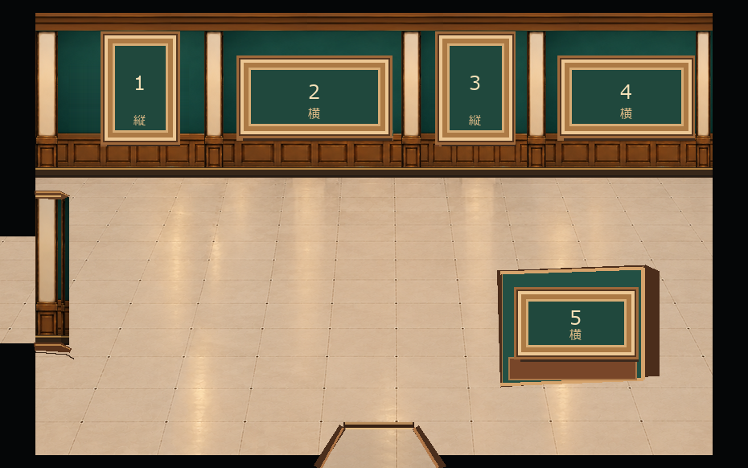
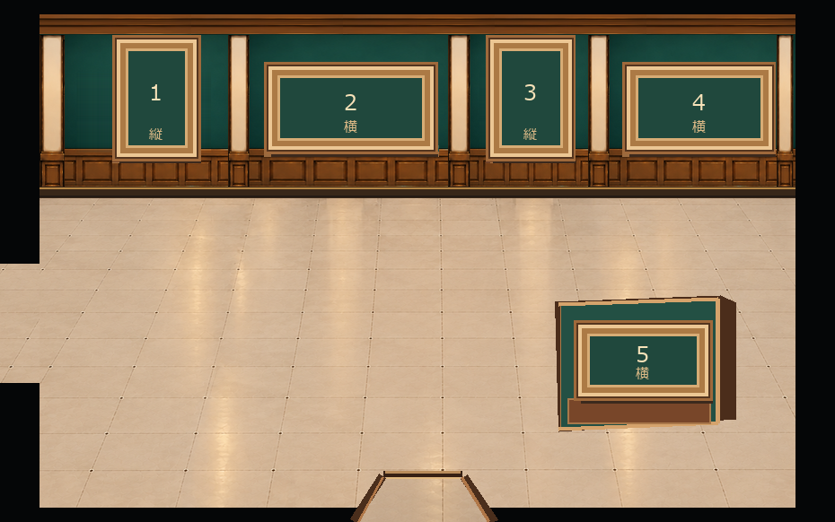
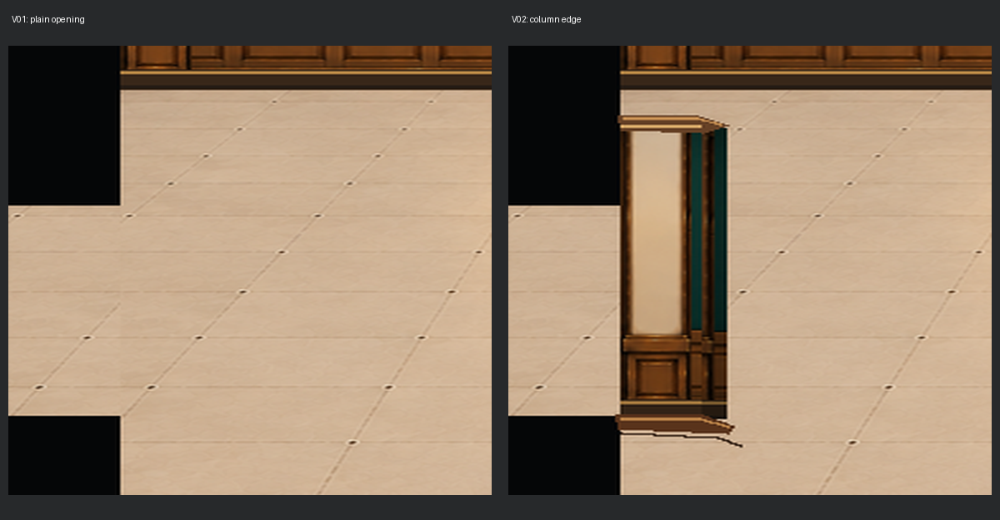

とっておき美術館 / 建築背景監修
展示室4｜柱なしの通路を採用
採用したのは、柱・アーチ・扉を追加しないv01です。v02の柱状の張り出しは比較試作として残しています。


左通路の拡大比較

左：柱なし v01 ／ 右：柱状の張り出し v02
※建築背景は柱なしv01の見た目を採用済みです。柱ありv02は未採用。奥壁4枠＋独立壁1枠のA案は変更していません。ゲーム内の当たり判定・正式素材への反映もしていません。
採用したのは、柱・アーチ・扉を追加しないv01です。v02の柱状の張り出しは比較試作として残しています。



左：柱なし v01 ／ 右：柱状の張り出し v02
※建築背景は柱なしv01の見た目を採用済みです。柱ありv02は未採用。奥壁4枠＋独立壁1枠のA案は変更していません。ゲーム内の当たり判定・正式素材への反映もしていません。